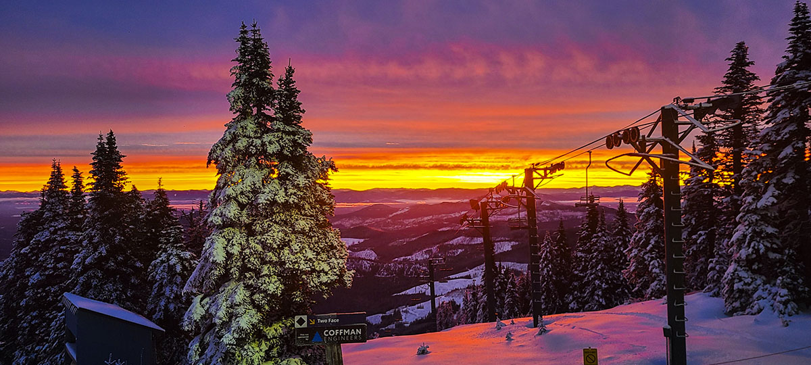

The winter season in the Pacific Northwest delivers some of the most accessible and varied alpine terrain in the country. From the extended ridges of Kellogg, Idaho to local night skiing, heading into the mountains offers a sharp break from routine and high-elevation views.
Navigating the terrain takes patience, proper gear, and cold endurance, whether riding early gondola tracks or cruising groomed cruisers late in the afternoon.
